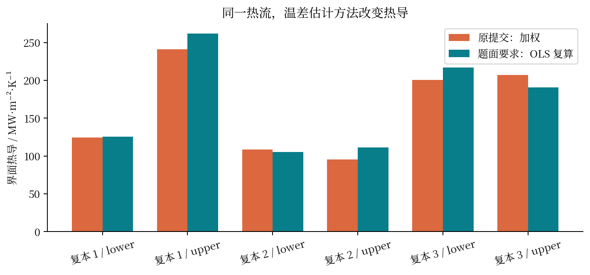
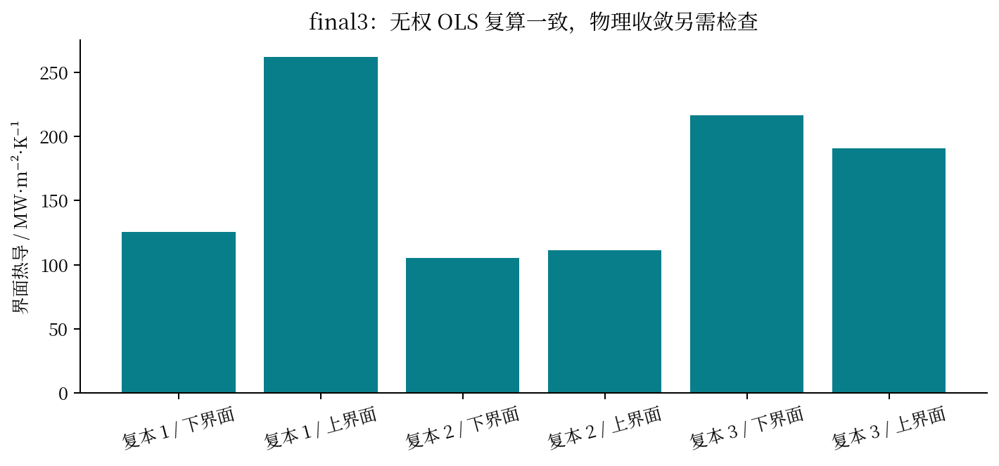
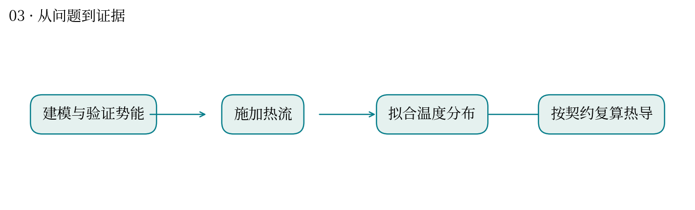
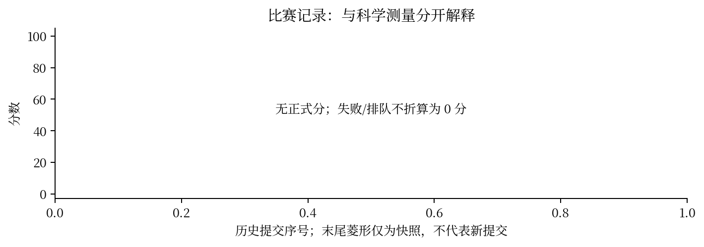

热量通过铜和水的接触面时，究竟有多难？
最高分快照：None · 2026-10-12T01:11:24+08:00
界面两侧的温度可能出现跳变。给定单位面积热流 J，界面热导 G=J/ΔT；温差的估计方式会直接改变结论。
建立 Cu(111)-水体系并计算热流和温度剖面。逐包复核发现：早期 attempt 54540 使用加权拟合；final2 已有 1201 条逐配置预测且测试 ID 完全匹配；final3 又修复力 RMSE 汇总并通过无权 OLS 复算。
历史包热导与要求的 OLS 最大相差 14.71%；final3 同样观测量的最大相对误差降到 9.94×10⁻¹⁵。final3 的六个界面热导约为 105–262 MW·m⁻²·K⁻¹，分布差异仍需检查稳态和统计误差。
按原子数加权回归与按空间分箱等权回归回答的统计问题不同。逐配置预测不能用家族均值替代；单位、面积和稳态窗口也要固定。
这很像单细胞分析中按细胞数汇总与按生物学样本汇总：权重一换，估计对象就变了。这里只类比统计权重，不把原子当成独立生物学重复。
2026-10-12 01:42 平台快照：六笔均为待人工评审，明确说明自动评分暂不可用，尚无最终分。历史契约缺陷已在后续版本修正；不能断言六次全因格式失败，也不能仅凭量级合理认定物理正确。“全场没做出来”和“投入性价比低”需要最终榜、实际耗时及可替代收益支持。




| attempt | 提交时间 | 分数 | 状态 |
|---|---|---|---|
| 54262 | 10-11 14:20:14 | — | 失败 |
| 54540 | 10-11 15:46:25 | — | 失败 |
| 54869 | 10-11 17:18:25 | — | 失败 |
| 54894 | 10-11 17:23:58 | — | 失败 |
| 54922 | 10-11 17:28:24 | — | 失败 |
| 54942 | 10-11 17:33:12 | — | 失败 |
源文件 SHA256 见 证据清单；用 scripts/build.py 重建图表。